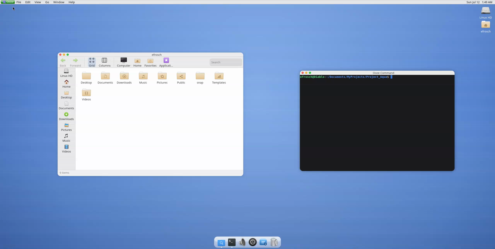
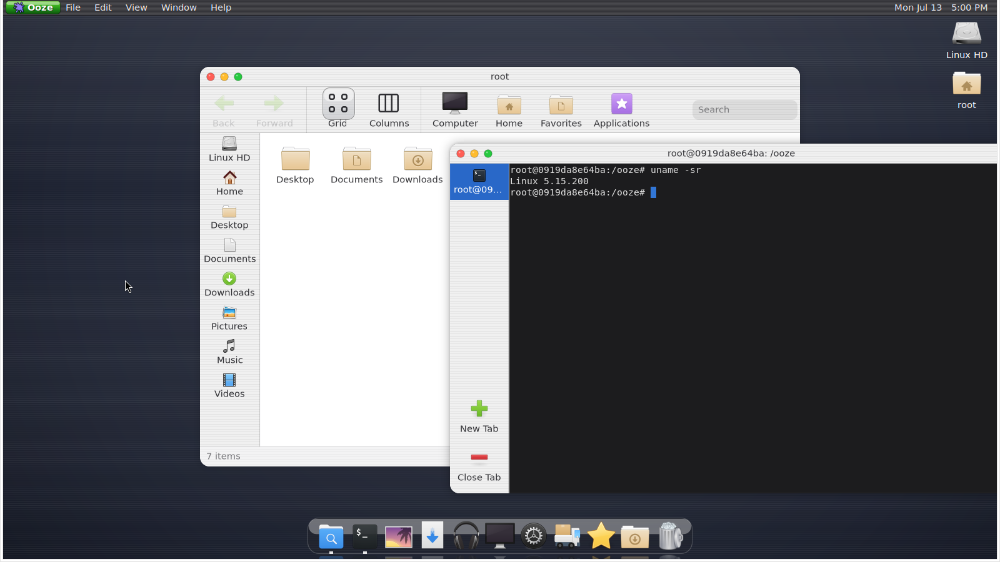

Your whole screen looks like one desktop.
Ooze puts its Gel frames and traffic lights on its own apps and supported third-party Wayland windows.
A desktop that makes sense
The clarity of classic Mac OS and old GNOME, rebuilt on Linux.
No walled garden. No subscription. Just a calm, consistent desktop with Linux freedom underneath it.
A real desktop: menu bar, floating dock, Gel windows, and matching apps.
Most Linux desktops give you a shell and a pile of unrelated apps. Ooze is built as one complete, opinionated desktop.
Ooze puts its Gel frames and traffic lights on its own apps and supported third-party Wayland windows.
A menu bar, floating dock, desktop icons, wallpaper, and lively animations work together.
Light and dark mode follow through the shell, Ooze apps, and supported foreign GTK applications.
Files, settings, terminal, screenshots, images, sound, torrents, software, and displays share one visual language.
Wayland, X11, classic app menus, foreign GTK themes, notifications, and system-tray applications live together.
OozeKit and a nested build-and-run workflow make new Ooze apps part of the desktop.
Spot — the file manager for folders, files, Trash, and icon or column views.
Ooze King — the settings hub for displays, themes, defaults, sound, software, torrents, and more.
Ooze Command — a clean, tabbed terminal.
Ooze Launch — a searchable launcher with categories, custom groups, and keyboard navigation.
Ooze Shot — screenshots with preview, copy, reveal, and Ooze Eye actions.
Ooze Eye — an image viewer with zoom, fit-to-window, and next/previous controls.
Ooze Ear — audio devices, volume, mute, and stream routing.
Ooze Torrent — torrent and magnet downloads with progress and pause/resume.
Software (Ooze Pak) — install and remove Flatpak applications.
Ooze Monitor — resolution, refresh rate, scale, orientation, and monitor layout.
Ooze Defaults — default apps for links, files, media, text, and torrents.
Ooze Themes — appearance, icon, cursor, and foreign-GTK theme preferences.
Ooze About — information about your computer and Ooze apps.
Modern Wayland apps and older X11 apps run side by side through built-in Xwayland support.
Supported third-party Wayland windows receive Ooze frames and traffic lights too.
Global menus, StatusNotifier/AppIndicator tray items, and clickable notification cards fit into the shell.
Bundled WhiteSur themes follow Ooze's appearance live for foreign GTK applications.
Autostart, polkit authentication, PAM lock screen, and logout, restart, shutdown, and suspend actions are built in.
The first-party ScreenCast portal lets Flatpak Discord and browser calls share a monitor through a native picker.


Light and dark — the same desktop, one click apart.
Download the Alpha 0.4.9 AppImage or native session package from Releases. The AppImage runs nested on an existing Wayland desktop.
chmod +x Ooze-v0.4.9-x86_64.AppImage && ./Ooze-v0.4.9-x86_64.AppImageOr install the native session package:
sudo apt install ./ooze_0.4.9_amd64.debOoze is a Mutter 18 plugin with an installable OozeKit toolkit, a nested development loop, and headless CI checks for every app that can be constructed without live services.